Geometry Optimization¶
Code author: Rollin A. King
Section author: Rollin A. King and Lori A. Burns
Module: Keywords, PSI Variables, OPTKING
Psi4 carries out molecular optimizations using a module called optking. The optking program takes as input nuclear gradients and, optionally, nuclear second derivatives — both in Cartesian coordinates. The default minimization algorithm employs an empirical model Hessian, redundant internal coordinates, an RFO step, and the BFGS Hessian update.
The principal literature references include the introduction of redundant internal coordinates by Peng et al. [Peng:1996:49]. The general approach employed in this code is similar to the “model Hessian plus RF method” described and tested by Bakken and Helgaker [Bakken:2002:9160]. (However, for separated fragments, we have chosen not to employ by default their “extra-redundant” coordinates defined by their “auxiliary interfragment” bonds. These can be included via the option ADD_AUXILIARY_BONDS).
The internal coordinates are generated automatically based on an assumed bond connectivity. The connectivity is determined by testing if the interatomic distance is less than the sum of atomic radii times the value of COVALENT_CONNECT. If the user finds that some connectivity is lacking by default, then this value may be increased. Otherwise, the internal coordinate definitions may be modified directly. If one desires to see or modify the internal coordinates being used, then one can set INTCOS_GENERATE_EXIT to true. The internal coordinate definitions are provided in the file with extension ”.intco”. See the Optimizing Minima section for more detail.
Warning
The selection of a Z-matrix input, and in particular the inclusion of dummy atoms, has no effect on the behavior of the optimizer, which begins from a Cartesian representation of the system.
The ongoing development of optking is providing for unique treatment of coordinates which connect distinct molecular fragments. Thus, several keywords relate to “interfragment modes”, though many of these capabilities are still under development. Presently by default, separate fragments are bonded by nearest atoms, and the whole system is treated as if it were part of one molecule. However, with the option FRAG_MODE, fragments may instead be related by a unique set of interfragment coordinates defined by reference points within each fragment. The reference points can be atomic positions (current default), linear combinations of atomic positions, or located on the principal axes (not yet working).
Basic Keywords¶
OPT_TYPE¶
Specifies minimum search, transition-state search, or IRC following
- Type: string
- Possible Values: MIN, TS, IRC
- Default: MIN
STEP_TYPE¶
Geometry optimization step type, either Newton-Raphson or Rational Function Optimization
- Type: string
- Possible Values: RFO, NR, SD, LINESEARCH_STATIC
- Default: RFO
GEOM_MAXITER¶
Maximum number of geometry optimization steps
- Type: integer
- Default: 50
G_CONVERGENCE¶
Set of optimization criteria. Specification of any MAX_*_G_CONVERGENCE or RMS_*_G_CONVERGENCE options will append to overwrite the criteria set here unless FLEXIBLE_G_CONVERGENCE is also on. See Table Geometry Convergence for details.
- Type: string
- Possible Values: QCHEM, MOLPRO, GAU, GAU_LOOSE, GAU_TIGHT, GAU_VERYTIGHT, TURBOMOLE, CFOUR, NWCHEM_LOOSE
- Default: QCHEM
FULL_HESS_EVERY¶
Frequency with which to compute the full Hessian in the course of a geometry optimization. 0 means to compute the initial Hessian only, 1 means recompute every step, and N means recompute every N steps. The default (-1) is to never compute the full Hessian.
- Type: integer
- Default: -1
INTCOS_GENERATE_EXIT¶
Do only generate the internal coordinates and then stop?
- Type: boolean
- Default: false
Optimizing Minima¶
First, define the molecule and basis in the input.
molecule h2o {
O
H 1 1.0
H 1 1.0 2 105.0
}
set basis dz
Then the following are examples of various types of calculations that can be completed.
Optimize a geometry using default methods (RFO step):
optimize('scf')
Optimize using Newton-Raphson steps instead of RFO steps:
set step_type nr optimize('scf')Optimize using energy points instead of gradients:
optimize('scf', dertype='energy')
Optimize while limiting the initial step size to 0.1 au:
set intrafrag_step_limit 0.1 optimize('scf')Optimize while always limiting the step size to 0.1 au:
set { intrafrag_step_limit 0.1 intrafrag_step_limit_min 0.1 intrafrag_step_limit_max 0.1 } optimize('scf')Optimize while calculating the Hessian at every step:
set full_hess_every 1 optimize('scf')
Hessian¶
If Cartesian second derivatives are available, optking can read them and transform them into internal coordinates to make an initial Hessian in internal coordinates. Otherwise, several empirical Hessians are available, including those of Schlegel [Schlegel:1984:333] and Fischer and Almlof [Fischer:1992:9770]. Either of these or a simple diagonal Hessian may be selected using the INTRAFRAG_HESS keyword.
All the common Hessian update schemes are available. For formulas, see Schlegel [Schlegel:1987:AIMQC] and Bofill [Bofill:1994:1].
The Hessian may be computed during an optimization using the FULL_HESS_EVERY keyword.
Transition States, Reaction Paths, and Constrained Optimizations¶
Calculate a starting Hessian and optimize the “transition state” of linear water (note that without a reasonable starting geometry and Hessian, such a straightforward search often fails):
molecule h2o { O H 1 1.0 H 1 1.0 2 160.0 } set { basis dz full_hess_every 0 opt_type ts } optimize('scf')At a transition state (planar HOOH), compute the second derivative, and then follow the intrinsic reaction path to the minimum:
molecule hooh { symmetry c1 H O 1 0.946347 O 2 1.397780 1 107.243777 H 3 0.946347 2 107.243777 1 0.0 } set { basis dzp opt_type irc geom_maxiter 50 } frequencies('scf') optimize('scf')Optimize a geometry (HOOH) at a frozen dihedral angle of 90 degrees.
molecule { H O 1 0.90 O 2 1.40 1 100.0 H 3 0.90 2 100.0 1 90.0 } set optking { frozen_dihedral = (" 1 2 3 4 ") } optimize('scf')To instead freeze the two O-H bond distances
set optking { frozen_distance = (" 1 2 3 4 ") }
For bends, the corresponding keyword is “frozen_bend”.
To freeze the cartesian coordinates of atom 2
freeze_list = """ 2 xyz """ set optking frozen_cartesian $freeze_list
To freeze only the y coordinates of atoms 2 and 3
freeze_list = """ 2 y 3 y """ set optking frozen_cartesian $freeze_list
To optimize toward a value of 0.95 Angstroms for the distance between atoms 1 and 3, as well as that between 2 and 4
set optking { fixed_distance = (" 1 3 0.95 2 4 0.95 ") }
Note that the effect of the frozen and fixed keywords is independent of how the geometry of the molecule was input (whether Z-matrix or cartesian, etc.)..
To scan the potential energy surface by optimizing at several fixed values of the dihedral angle of HOOH.
molecule hooh { 0 1 H 0.850718 0.772960 0.563468 O 0.120432 0.684669 -0.035503 O -0.120432 -0.684669 -0.035503 H -0.850718 -0.772960 0.563468 } set { basis cc-pvdz intrafrag_step_limit 0.1 } dihedrals = [100,110,120,130,140,150] PES = [] for phi in dihedrals: my_string = "1 2 3 4 " + str(phi) set optking fixed_dihedral = $my_string E = optimize('scf') PES.append((phi, E)) print "\n\tcc-pVDZ SCF energy as a function of phi\n" for point in PES: print "\t%5.1f%20.10f" % (point[0], point[1])
Dealing with problematic optimizations¶
Although optking is continuously improved with robustness in mind, some attempted optimizations will inevitably fail to converge to the desired minima. For difficult cases, the following suggestions are made.
- As for any optimizer, computing the Hessian and limiting the step size will successfully converge a higher percentage of cases. The default settings have been chosen because they perform efficiently for common, representative test sets. More restrictive, cautious steps are sometimes necessary.
- DYNAMIC_LEVEL allows optking to change the method of optimization toward algorithms that, while often less efficient, may help to converge difficult cases. If this is initially set to 1, then optking, as poor steps are detected, will increase the level through several forms of more robust and cautious algorithms. The changes will reduce the trust radius, allow backward steps (partial line searching), add cartesian coordinates, switch to cartesian coordinates, and take steepest-descent steps.
- The developers have found the OPT_COORDINATES set to “BOTH” which includes both the redundant internal coordinate set, as well as cartesian coordinates, works well for systems with long ‘arms’ or floppy portions of a molecule poorly described by local internals.
Direct manipulation of the optmization coordinates¶
Generate the internal coordinates and then stop:
set intcos_generate_exit true optimize('scf')The coordinates may then be found in the “intco” file. In this case, the file contains:
F 1 3 R 1 2 R 1 3 B 2 1 3 C 1 1 1.000000 C 1 2 1.000000 C 1 3 1.000000The first line indicates a fragment containing atoms 1-3. The following lines define two distance coordinates (bonds) and one bend coordinate. This file can be modified, and if present, is used in subsequent optimizations. The lines below the simple internal coordinates specify linear combinations of coordinates. In the simplest default case, the lines above simply define combination coordinates which are identical to the simple internals. If OPT_COORDINATES specifies delocalized coordinates, then the combinations will be more complex.
Since the multiple-fragment coordinates are still under development, they are not documented here. However, if desired, one can change the value of FRAG_MODE, generate the internal coordinates, and see how multiple fragment systems are defined.
Coordinates may be frozen by adding an asterisk after the letter of the coordinate. The asterisk results in that internal coordinate being frozen at its initial value. The “intco” file below for water specifies an optimization with both O-H bonds frozen.:
F 1 3 R* 1 2 R* 1 3 B 2 1 3
If one instead wishes to optimize toward (“fix”) a value that is not satisfied by the initial structure, then the value is added to the end of the line. The following corresponds to an optimization that will add additional forces to move the O-H bonds to 1.70 au.
F 1 3 R 1 2 1.70 R 1 3 1.70 B 2 1 3
Convergence Criteria¶
Optking monitors five quantities to evaluate the progress of a geometry optimization. These are (with their keywords) the change in energy (MAX_ENERGY_G_CONVERGENCE), the maximum element of the gradient (MAX_FORCE_G_CONVERGENCE), the root-mean-square of the gradient (RMS_FORCE_G_CONVERGENCE), the maximum element of displacement (MAX_DISP_G_CONVERGENCE), and the root-mean-square of displacement (RMS_DISP_G_CONVERGENCE), all in internal coordinates and atomic units. Usually, these options will not be set directly. Primary control for geometry convergence lies with the keyword G_CONVERGENCE which sets the aforementioned in accordance with Table Geometry Convergence.
| G_CONVERGENCE | Max Energy | Max Force | RMS Force | Max Disp | RMS Disp |
|---|---|---|---|---|---|
| NWCHEM_LOOSE [4] | 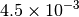 | 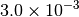 | 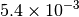 | ||
| GAU_LOOSE [6] | 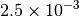 | 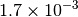 |  |
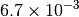 | |
| TURBOMOLE [4] |  |
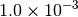 | 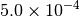 | ||
| GAU [3] [6] | 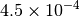 | 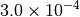 | 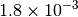 | 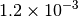 | |
| CFOUR [4] | 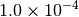 | ||||
| QCHEM [1] [5] | |
||||
| MOLPRO [2] [5] | |
||||
| GAU_TIGHT [3] [6] | 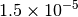 | 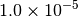 | 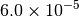 | 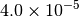 | |
| GAU_VERYTIGHT [6] | 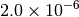 | |
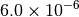 | 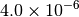 |
Footnotes
| [1] | Default |
| [2] | Baker convergence criteria are the same. |
| [3] | (1, 2) Counterpart NWCHEM convergence criteria are the same. |
| [4] | (1, 2, 3) Convergence achieved when all active criteria are fulfilled. |
| [5] | (1, 2, 3) Convergence achieved when Max Force and one of Max Energy or Max Disp are fulfilled. |
| [6] | (1, 2, 3, 4, 5) Normal convergence achieved when all four criteria (Max Force, RMS Force, Max Disp, and RMS Disp) are fulfilled. To help with flat potential surfaces, alternate convergence achieved when 100rms force is less than RMS Force criterion. |
For ultimate control, specifying a value for any of the five monitored options activates that criterium and overwrites/appends it to the criteria set by G_CONVERGENCE. Note that this revokes the special convergence arrangements detailed in notes [5] and [6] and instead requires all active criteria to be fulfilled to achieve convergence. To avoid this revokation, turn on keyword FLEXIBLE_G_CONVERGENCE.
Output¶
The progress of a geometry optimization can be monitored by grepping the output file for the
tilde character (~). This produces a table like the one below that shows
for each iteration the value for each of the five quantities and whether the criterion
is active and fulfilled (*), active and unfulfilled ( ), or inactive (o).
--------------------------------------------------------------------------------------------- ~
Step Total Energy Delta E MAX Force RMS Force MAX Disp RMS Disp ~
--------------------------------------------------------------------------------------------- ~
Convergence Criteria 1.00e-06 * 3.00e-04 * o 1.20e-03 * o ~
--------------------------------------------------------------------------------------------- ~
1 -38.91591820 -3.89e+01 6.91e-02 5.72e-02 o 1.42e-01 1.19e-01 o ~
2 -38.92529543 -9.38e-03 6.21e-03 3.91e-03 o 2.00e-02 1.18e-02 o ~
3 -38.92540669 -1.11e-04 4.04e-03 2.46e-03 o 3.63e-02 2.12e-02 o ~
4 -38.92548668 -8.00e-05 2.30e-04 * 1.92e-04 o 1.99e-03 1.17e-03 o ~
5 -38.92548698 -2.98e-07 * 3.95e-05 * 3.35e-05 o 1.37e-04 * 1.05e-04 o ~
The full list of keywords for optking is provided in Appendix OPTKING.
Information on the Psithon function that drives geometry optimizations is provided
at optimize().